outpath = default_data_path("Q1_R1_processed_test", "skyflat")skyflat
Investigate and remove an atemporal background from a set of observations.
In this notebook, we determine an atemporal (i.e. constant, or at least slowly-varying) background to subtract from the observations. We sometimes refer to this as a “skyflat”, since its purpose is to flatten the sky. However, we subtract the resulting model from the data, so it is not a flat-field correction. We also refer to this as an “autodark”, since in NISP it removes signal that is independent of the current level of incident light. However, it also does contain sky background, so is not really a dark.
To speed up the creation of the skyflats, we coarsen the data by taking the median in boxes. As this coarse data is used repeatedly, we compute it once for each observation and store it on disk.
create_coarse_data
def create_coarse_data(
obs_id, zarr_path, instrument, n_pix:int=51
):
Create and store the coarse data for a given observation ID.
Coarse data is computed by taking the median in boxes of size n_pix x n_pix.
mask_for_coarsening
def mask_for_coarsening(
ds, instrument
):
Mask the data for coarsening.
To capture potential slow temporal variations in the skyflat, we group the observations into a window around each observation. We then compute the skyflat for each observation using the observations in the group.
group_obs_ids
def group_obs_ids(
target_obs_ids, # list of observation IDs for which to create groups
available_obs_ids, # list of observation IDs available for grouping
half_window:int=3, # half-window size for grouping
max_gap_size:int=2, # maximum gap size for judging whether a sequence is continuous
)->dict: # dict of grouped observation IDs for each observation ID
Group the observation IDs around each observation ID.
Determines the best group of observations for characterising the skyflat for a given observation ID. For observations within a continuous sequence, the group comprises the half_window observations on either side of the given observation ID. The target observation itself is not included in the group. The group is restricted to observations in a continuous sequence (with gaps no larger than max_gap_size), such that it may be truncated for observations close to the edge of a sequence. Where possible, the number of observations on the opposing side is increased, to maintain a total group size of 2 * half_window. However, for short sequences, the group may be smaller.
The skyflat is simply the median of the coarse data over each group of observations.
We can also compute the error on the skyflat by taking the median absolute deviation of the coarse data over each group of observations.
construct_skyflats_err
def construct_skyflats_err(
group_data, median
):
Construct the error on the skyflats for a given obs_id.
construct_skyflats
def construct_skyflats(
group_data
):
Construct the skyflats for a given obs_id.
prepare_group_data
def prepare_group_data(
data, group_for_obs_id, obs_id, short:bool=False
):
Call self as a function.
normalise_per_dither
def normalise_per_dither(
data, restore_median_level:bool=True
):
Additively normalise the data per dither.
If restore_median_level is False, the median of the normalised data will be zero, otherwise it will be restored to the median level across the dithers.
Including an estimate of the sky level in the autodark means that it is subtracted off the images before swarping. This was determined to be a good way to avoid introducing gradients in the background due to the variations in the pixel area across the FoV.
write_skyflats
def write_skyflats(
obs_id, flats, outpath, coarse_factor:NoneType=None, wcs:NoneType=None, flats_err:NoneType=None,
short:bool=False
):
Write the skyflats for a given obs_id to disk as FITS files.
read_skyflat
def read_skyflat(
obs_id, filter, detector, skyflat_path, short:bool=False
):
Call self as a function.
correct_for_zp
def correct_for_zp(
data, zp
):
Correct the data for the zero-point variations between detectors.
interpolate_skyflats
def interpolate_skyflats(
flat, data, method:str='nearest', coarse_factor:NoneType=None
):
Interpolate the flat to the x, y coordinates of the data.
create_skyflats
def create_skyflats(
obs_id, # observation ID for which to create the skyflats
group_for_obs_id, # dict of grouped observation IDs for each observation ID
zarr_path, # path to the zarr files
instrument, # instrument name (VIS or NISP/NIR)
zp:NoneType=None, # zero-points if corrections are required (not recommended)
n_pix:int=51, # the coarsening factor
normalise:str='median', # normalisation method: "median", "zero" or None
filter_size:NoneType=None, # size of the median filter for smoothing the skyflats
short:bool=False, # whether to create the skyflats for the short dithers
return_coarse_data:bool=False, # whether to return the coarse data
):
Read the coarse data and compute the skyflats for a given obs_id.
apply_skyflat
def apply_skyflat(
data, skyflat, interpolation_method:str='nearest', coarse_factor:NoneType=None
):
Apply a coarse skyflat to some data.
Example
NIR
path = default_data_path("Q1_R1", "NIR")
zarr_path = default_data_path("Q1_R1_processed_test", "zarr", "NIR")
instrument = "NIR"First we ensure that zarr references have been created for all of the observations.
create_all_zarr_refs(path, zarr_path)We can then read the data and determine the groups of observations to use for computing the skyflats for each observation.
ds, wcs, zp = read_all_zarr_refs(zarr_path)
obs_ids = sorted(ds.observation_id.values)group_for_obs_id = group_obs_ids(obs_ids, obs_ids, half_window=3)Before examining the skyflats themselves, we will take a look at the data used to create them.
Before coarsening, we mask sources in the data. Let’s check this is working correctly, on an image with a few relatively bright stars.
obs_id = 2681
example_ds = ds.sel(
observation_id=obs_id, filter="J", detector="DET11", dither="1", drop=True
)
example_data = example_ds["SCI"]First check the star mask…
star_mask = xr_star_mask(example_ds["DQ"], instrument=instrument).compute()plot_mask(
example_data.to_numpy(),
star_mask.to_numpy(),
detail=True,
background_focus=True,
show_mask=False,
)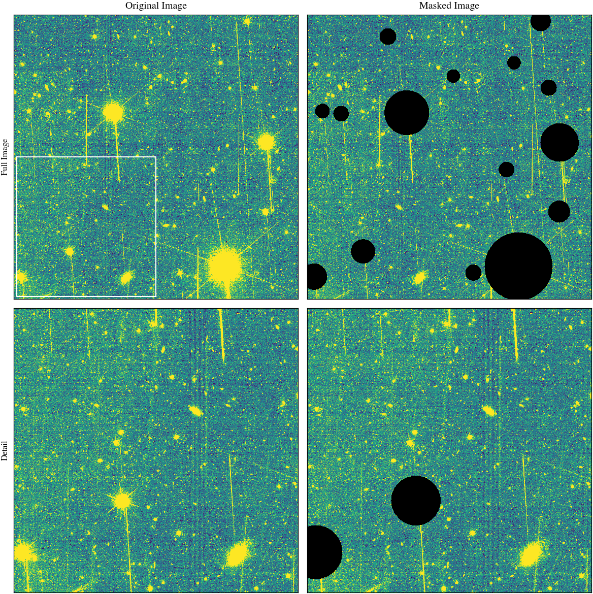
Now the full mask…
example_mask = mask_for_coarsening(example_ds, instrument=instrument, verbose=True)
masked_data = example_data.where(~example_mask)
example_data, example_mask, masked_data = dask.compute(
example_data, example_mask, masked_data
)Fast mask
smoothing image with sigma of 1.0 pixels
iteration 0
estimating background from 3679807 pixels
estimated background is 75.96539306640625
background RMS is 11.065
eroding mask with 1 iterations
dilating mask with radius 2.0 pixels for 2 iterations
iteration 1
estimating background from 3130495 pixels
estimated background is 75.15674591064453
background RMS is 10.451
eroding mask with 1 iterations
dilating mask with radius 2.0 pixels for 2 iterations
iteration 2
estimating background from 3104767 pixels
estimated background is 75.12353515625
background RMS is 10.434plot_mask(
example_data.to_numpy(),
example_mask.to_numpy(),
detail=True,
background_focus=True,
show_mask=False,
)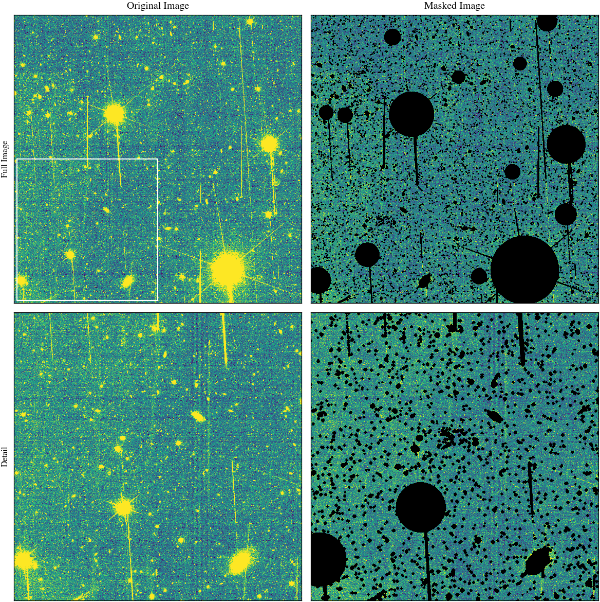
Now, we’ll take a look at the coarsened data.
n_pix = 51
obs_id = 2683flats, coarse_data, coarse_data_norm = create_skyflats(
obs_id,
group_for_obs_id,
zarr_path,
instrument=instrument,
n_pix=n_pix,
return_coarse_data=True,
)
coarse_data = coarse_data.compute()
coarse_data_norm = coarse_data_norm.compute()n_obs_ids = len(coarse_data.observation_id)
n_dithers = len(coarse_data.dither)
fw, fh = plt.rcParams["figure.figsize"]
fig, axarr = plt.subplots(
n_obs_ids, n_dithers, figsize=(2 * fw, 2 * fw), layout="compressed"
)
for i in range(n_obs_ids):
for j in range(n_dithers):
ax = axarr[i, j]
d = coarse_data_norm.sel(filter="J", detector="DET44").isel(
observation_id=i, dither=j, drop=True
)
ax.imshow(
d.to_numpy(),
cmap=cmap,
vmin=70,
vmax=82,
interpolation="none",
origin="lower",
)
ax.set_xticks([])
ax.set_yticks([])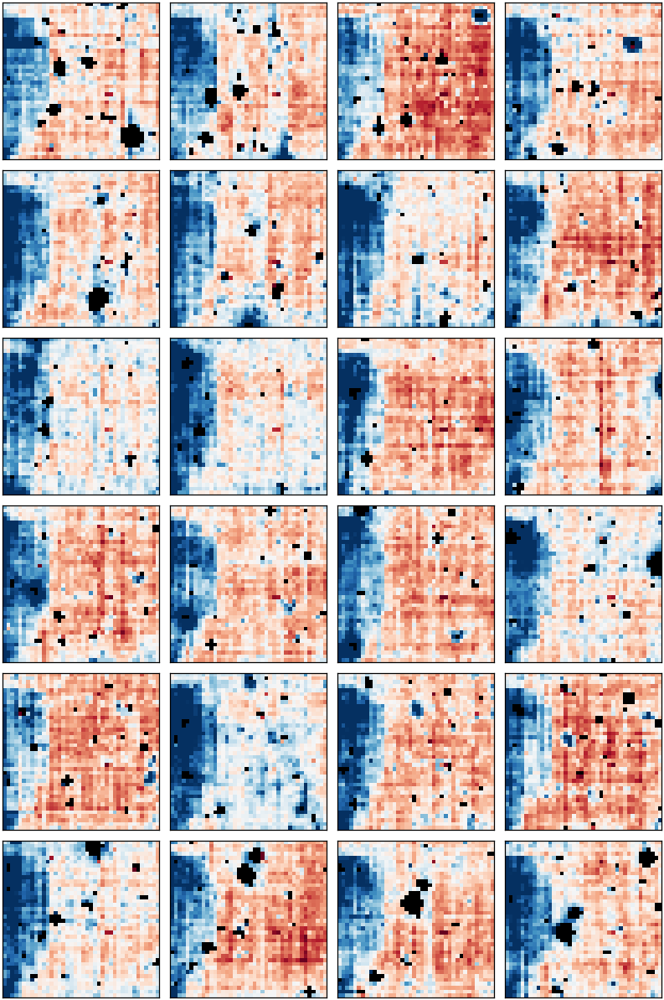
We go ahead and compute the skyflats for an example observation.
flats = create_skyflats(
obs_id, group_for_obs_id, zarr_path, instrument="NISP", n_pix=n_pix
)flats = flats.compute()Examine the flats.
The autodarks contain a non-zero sky level. However, in the plots below we are primarily interested in the variations across the FoV, so we subtract off the median level.
def calculate_median_per_detector(flats, camera):
median_per_detector = flats.median(dim=["x", "y"], keep_attrs=True)
median_per_detector = median_per_detector.sel(
detector=np.array(camera.chip_layout).flatten()
)
median_per_detector = median_per_detector.to_numpy().reshape(
camera.chip_layout.shape
)
return median_per_detectordef plot_flats(flats, filter, two_column=False):
def centre_text(ax, text, va="center", relative_fontsize=1):
fontsize = relative_fontsize * plt.rcParams["font.size"]
edge_stroke = 2 * relative_fontsize
ax.text(
0.5,
0.5,
text,
ha="center",
va=va,
fontsize=fontsize,
color="black",
transform=ax.transAxes,
path_effects=[
mpl_path_effects.withStroke(linewidth=edge_stroke, foreground="white")
],
)
def adu_to_sb(adu):
sign = np.sign(adu)
adu = np.abs(adu)
sb = (
-2.5 * np.log10(adu)
+ camera.nominal_zeropoint[filter]
+ 2.5 * np.log10(camera.pix_scale**2)
)
return sign * sb
camera = VIS if filter == "VIS" else NISP
relative_fontsize = 0.5 if filter == "VIS" and not two_column else 1
median_per_detector = calculate_median_per_detector(
flats.sel(filter=filter), camera
)
median_level = flats.median(dim=["x", "y", "detector"])
median_per_detector = (
median_per_detector - median_level.sel(filter=filter).to_numpy()
)
flats = flats - median_level
median_level = median_level.sel(filter=filter).to_numpy()
fw, fh = plt.rcParams["figure.figsize"]
if two_column:
fw = fw * 2
fh = fh * 2
fig, ax_arr = plt.subplots(
*camera.chip_layout.shape, figsize=(fw, fh), layout="compressed"
)
ax_arr = ax_arr[::-1]
flats_filter = flats.sel(filter=filter)
vmax = max(
abs(flats_filter.quantile(0.999)), abs(flats_filter.quantile(0.001))
).to_numpy()
vmin = -vmax
for i in range(camera.chip_layout.shape[0]):
for j in range(camera.chip_layout.shape[1]):
ax = ax_arr[i, j]
flat_chip = flats.sel(filter=filter, detector=camera.chip_layout[i, j])
if camera.chip_rotations[i, j]:
flat_chip = np.rot90(flat_chip, 2)
im = ax.imshow(
flat_chip,
vmin=vmin,
vmax=vmax,
interpolation="none",
cmap=cmap,
origin="lower",
)
centre_text(
ax,
camera.chip_layout[i, j],
va="bottom",
relative_fontsize=relative_fontsize,
)
centre_text(
ax,
f"{median_per_detector[i, j]:.1f}",
va="top",
relative_fontsize=relative_fontsize,
)
ax.set_xticks([])
ax.set_yticks([])
fig.get_layout_engine().set(w_pad=0, h_pad=0, hspace=0, wspace=0)
cbar = plt.colorbar(
im, ax=ax_arr, shrink=0.75, anchor=(0, 0.7), label="residual ADU pixel$^{-1}$"
)
cbar.ax.text(
0.5,
-0.1,
f"median level\n{median_level:.1f} ADU pixel$^{{-1}}$",
ha="center",
va="top",
transform=cbar.ax.transAxes,
)
cbar_ax2 = cbar.ax.secondary_yaxis("left", zorder=2)
sb_ticks = cbar.ax.get_yticks()
sb_ticks = sb_ticks[abs(sb_ticks) > 1e-9]
sb_ticklabels = np.abs(np.round(adu_to_sb(sb_ticks), 1))
cbar_ax2.set_yticks(sb_ticks)
cbar_ax2.set_yticklabels(sb_ticklabels)
band = filter if filter != "VIS" else "I"
cbar_ax2.set_ylabel(f"equivalent ${band}_\\mathrm{{E}}$ mag arcsec$^{{-2}}$")for filter in "YJH":
plot_flats(flats, filter)
plt.savefig(outpath / f"autodark_{obs_id}_{filter}.pdf")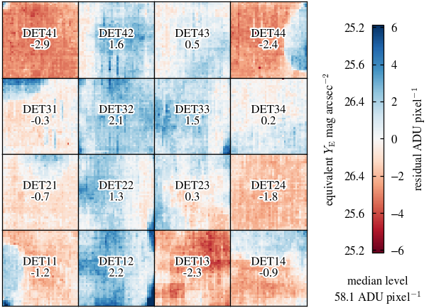
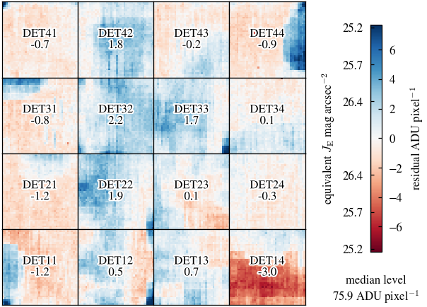
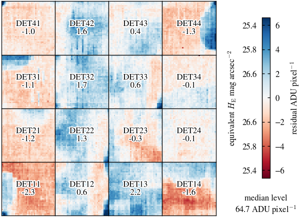
The skyflats are coarse, so to apply them we need to interpolate them to the coordinates of the data. We use the nearest-neighbour interpolation method, with an appropriate choice of coarsening factor, to maintain the sharp 10x10 pixel structure seen in the skyflats.
flats_interp = interpolate_skyflats(flats, ds)flat = flats.sel(filter="J", detector="DET11", drop=True).compute()
flat_interp = flats_interp.sel(filter="J", detector="DET11", drop=True).compute()fig, axarr = plt.subplots(1, 2)
for ax, f in zip(axarr, [flat_interp, flat]):
ax.imshow(f, vmin=70, vmax=82, interpolation="none", cmap=cmap, origin="lower")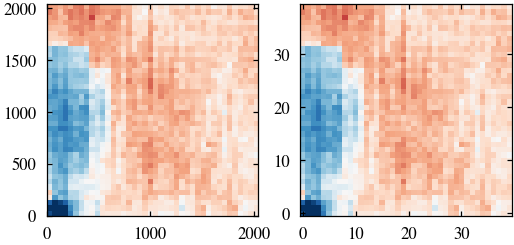
data = (
ds["SCI"]
.sel(observation_id=obs_id, dither="0", filter="J", detector="DET11")
.compute()
)
flat = flats.sel(filter="J", detector="DET11")
corrected = apply_skyflat(data, flat).compute()fw, fh = plt.rcParams["figure.figsize"]
fig, ax = plt.subplots(1, 2, figsize=(2 * fw, fw))
ax[0].imshow(data.to_numpy(), vmin=50, vmax=100)
ax[1].imshow(corrected.to_numpy(), vmin=-25, vmax=25);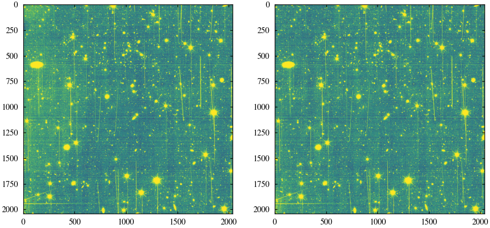
Check that we can write to FITS, read, interpolate and apply with the same results.
write_skyflats(obs_id, flats, outpath, coarse_factor=n_pix, wcs=None, flats_err=None)flat_from_fits, coarse_factor = read_skyflat(
obs_id, filter="J", detector="DET11", skyflat_path=outpath
)flat_interp_from_fits = interpolate_skyflats(flat_from_fits, data)assert np.allclose(flat_interp.to_numpy(), flat_interp_from_fits)corrected_from_fits = apply_skyflat(data, flat_from_fits)assert np.allclose(corrected.to_numpy(), corrected_from_fits)VIS
Check this also works for VIS.
path = default_data_path("Q1_R1", "VIS_QUAD")
zarr_path = default_data_path("Q1_R1_processed_test", "zarr", "VIS")
instrument = "VIS"First we ensure that zarr references have been created for all of the observations.
create_all_zarr_refs(path, zarr_path)We can then read the data and determine the groups of observations to use for computing the skyflats for each observation.
ds, wcs, zp = read_all_zarr_refs(zarr_path)
obs_ids = sorted(ds.observation_id.values)group_for_obs_id = group_obs_ids(obs_ids, obs_ids, half_window=3)Before examining the skyflats themselves, we will take a look at the data used to create them.
Before coarsening, we mask sources in the data. Let’s check this is working correctly.
obs_id = 2681
example_ds = ds.sel(
observation_id=obs_id, filter="VIS", detector="3-1.G", dither="0-1", drop=True
)
example_data = example_ds["SCI"]First check the star mask…
star_mask = xr_star_mask(example_ds["FLG"], instrument=instrument).compute()plot_mask(
example_data.to_numpy(),
star_mask.to_numpy(),
detail=True,
background_focus=True,
show_mask=False,
)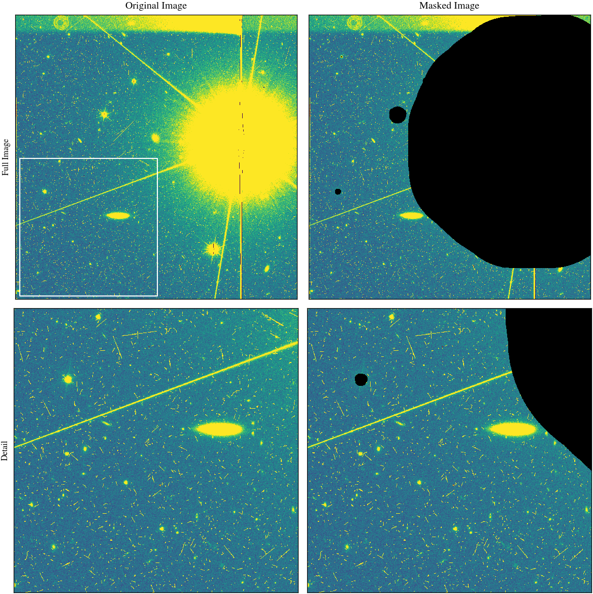
Now the full mask…
example_mask = mask_for_coarsening(example_ds, instrument=instrument, verbose=True)
example_data = example_ds["SCI"]
masked_data = example_data.where(~example_mask)
example_data, example_mask, masked_data = dask.compute(
example_data, example_mask, masked_data
)Fast mask
smoothing image with sigma of 3.0 pixels
iteration 0
estimating background from 2122121 pixels
estimated background is 26.9890079498291
background RMS is 4.083
eroding mask with 1 iterations
dilating mask with radius 2.0 pixels for 2 iterations
iteration 1
estimating background from 1241633 pixels
estimated background is 26.22107696533203
background RMS is 3.227
eroding mask with 1 iterations
dilating mask with radius 2.0 pixels for 2 iterations
iteration 2
estimating background from 1139488 pixels
estimated background is 26.190258026123047
background RMS is 3.172
eroding mask with 1 iterations
dilating mask with radius 2.0 pixels for 2 iterations
iteration 3
estimating background from 1133222 pixels
estimated background is 26.188390731811523
background RMS is 3.170plot_mask(
example_data.to_numpy(),
example_mask.to_numpy(),
detail=True,
background_focus=True,
show_mask=False,
)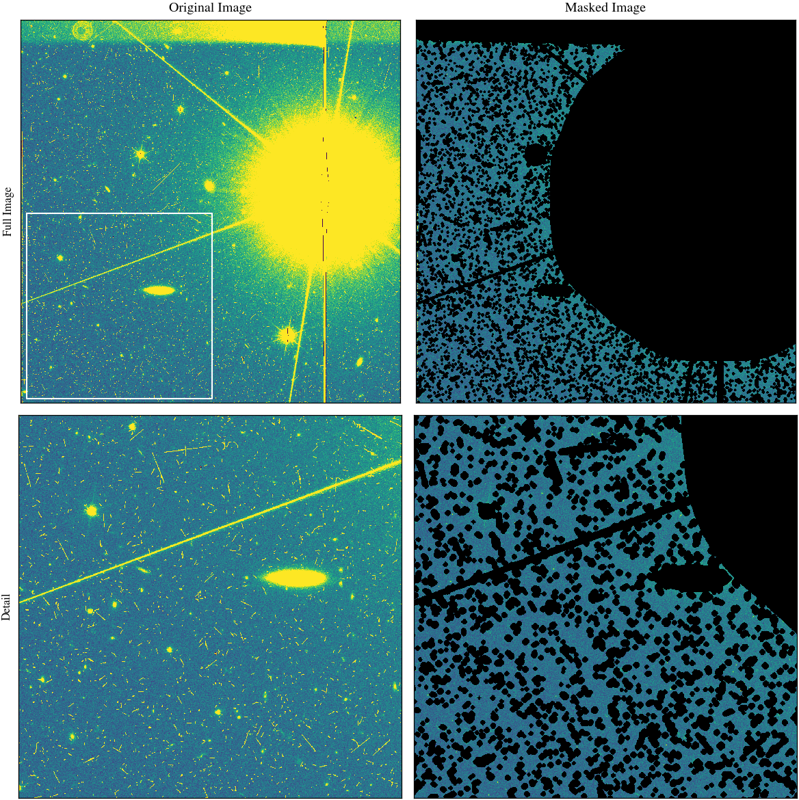
Now, we’ll take a look at the coarsened data.
n_pix = 149
obs_id = 2683flats, coarse_data, coarse_data_norm = create_skyflats(
obs_id,
group_for_obs_id,
zarr_path,
instrument=instrument,
n_pix=n_pix,
return_coarse_data=True,
)
coarse_data = coarse_data.compute()
coarse_data_norm = coarse_data_norm.compute()n_obs_ids = len(coarse_data.observation_id)
n_dithers = len(coarse_data.dither)
fw, fh = plt.rcParams["figure.figsize"]
fig, axarr = plt.subplots(
n_obs_ids, n_dithers, figsize=(2 * fw, 2 * fw), layout="compressed"
)
for i in range(n_obs_ids):
for j in range(n_dithers):
ax = axarr[i, j]
d = coarse_data_norm.sel(filter="VIS", detector="1-1.E").isel(
observation_id=i, dither=j, drop=True
)
ax.imshow(
d.to_numpy(),
cmap=cmap,
vmin=20,
vmax=28,
interpolation="none",
origin="lower",
)
ax.set_xticks([])
ax.set_yticks([])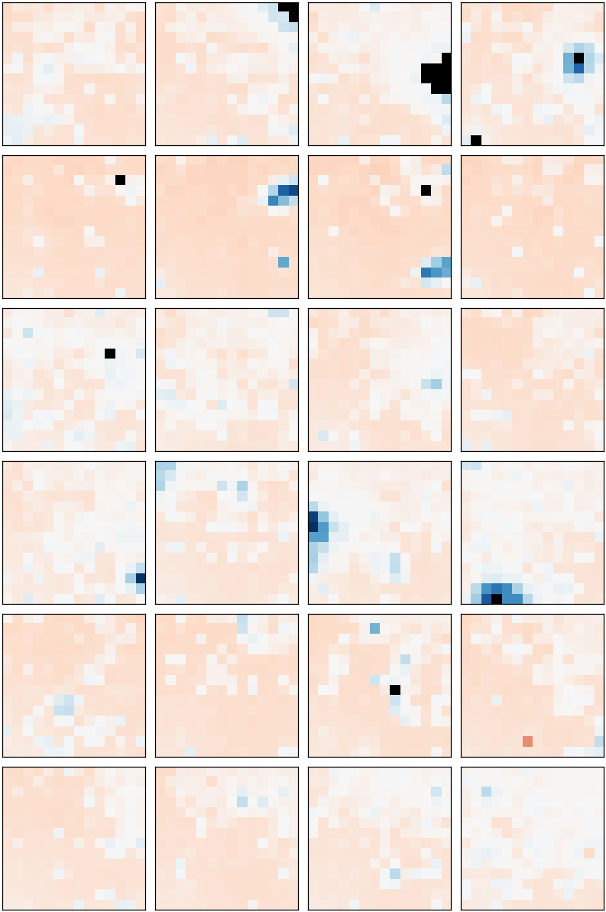
We go ahead and compute the skyflats for an example observation.
For VIS we use a 32×32 pixel coarsening and then apply a 3×3 median filter to smooth and further reduce the noise.
n_pix = 149
obs_id = 2683
flats = create_skyflats(
obs_id,
group_for_obs_id,
zarr_path,
instrument=instrument,
n_pix=n_pix,
filter_size=3,
)
flats_short = create_skyflats(
obs_id,
group_for_obs_id,
zarr_path,
instrument=instrument,
n_pix=n_pix,
short=True,
filter_size=3,
)flats = flats.compute()
flats_short = flats_short.compute()Examine the flats…
plot_flats(flats, "VIS", two_column=True)
plt.savefig(outpath / f"autodark_{obs_id}_VIS.pdf")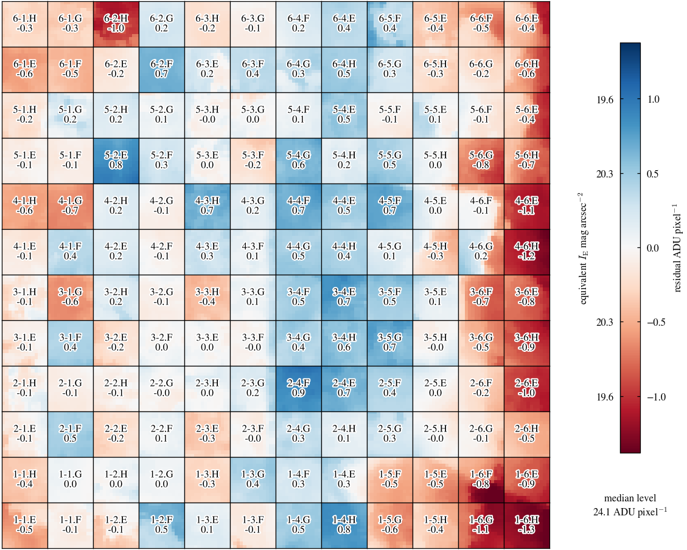
plot_flats(flats_short, "VIS", two_column=True)
plt.savefig(outpath / f"autodark_{obs_id}_VIS_short.pdf")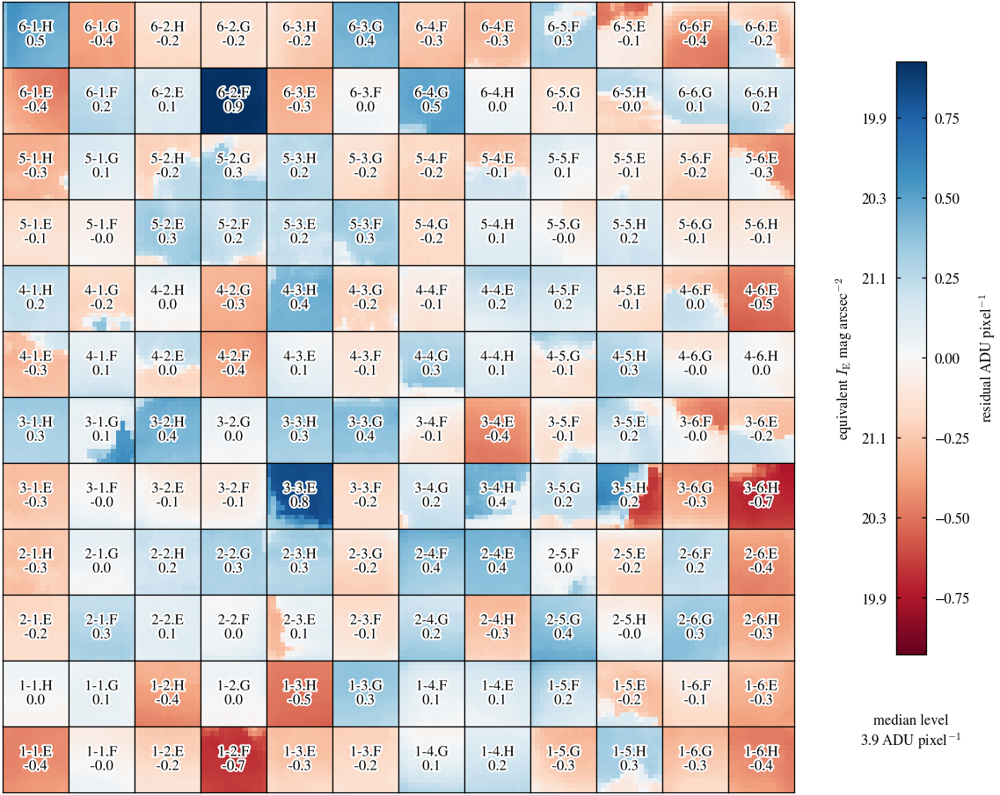
The skyflats are coarse, so to apply them we need to interpolate them to the coordinates of the data. For VIS we don’t see sharp feature, so use bilinear interpolation.
flats_interp = interpolate_skyflats(flats, ds, method="linear")
flats_interp_short = interpolate_skyflats(flats_short, ds, method="linear")flat = flats.sel(filter="VIS", detector="1-1.E").compute()
flat_short = flats_short.sel(filter="VIS", detector="1-1.E").compute()
flat_interp = flats_interp.sel(filter="VIS", detector="1-1.E").compute()
flat_interp_short = flats_interp_short.sel(filter="VIS", detector="1-1.E").compute()fig, ax = plt.subplots(1, 2)
for ax, f in zip(ax, [flat_interp, flat]):
ax.imshow(f, vmin=23, vmax=25, interpolation="none", cmap="RdBu")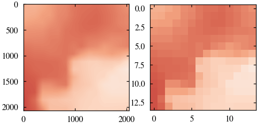
fig, ax = plt.subplots(1, 2)
for ax, f in zip(ax, [flat_interp_short, flat_short]):
ax.imshow(f, vmin=3, vmax=5, interpolation="none", cmap="RdBu")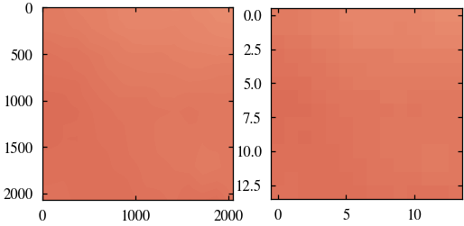
data = (
ds["SCI"]
.sel(observation_id=obs_id, dither="1-1", filter="VIS", detector="1-1.E")
.compute()
)
corrected = apply_skyflat(data, flat, interpolation_method="linear").compute()
data_short = (
ds["SCI"]
.sel(observation_id=obs_id, dither="1-2", filter="VIS", detector="1-1.E")
.compute()
)
corrected_short = apply_skyflat(
data_short, flat_short, interpolation_method="linear"
).compute()fw, fh = plt.rcParams["figure.figsize"]
fig, ax = plt.subplots(1, 2, figsize=(2 * fw, fw))
ax[0].imshow(data.to_numpy(), vmin=20, vmax=28)
ax[1].imshow(corrected.to_numpy(), vmin=-4, vmax=4)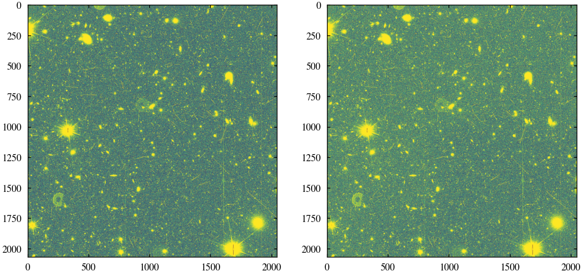
fw, fh = plt.rcParams["figure.figsize"]
fig, ax = plt.subplots(1, 2, figsize=(2 * fw, fw))
ax[0].imshow(data_short.to_numpy(), vmin=1, vmax=7)
ax[1].imshow(corrected_short.to_numpy(), vmin=-3, vmax=3);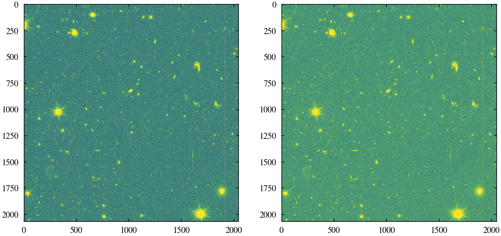
Check that we can write to FITS, read, interpolate and apply with the same results.
write_skyflats(obs_id, flats, outpath, coarse_factor=n_pix, wcs=None, flats_err=None)
write_skyflats(
obs_id,
flats_short,
outpath,
coarse_factor=n_pix,
wcs=None,
flats_err=None,
short=True,
)flat_from_fits, coarse_factor = read_skyflat(
obs_id, filter="VIS", detector="1-1.E", skyflat_path=outpath
)
flat_from_fits_short, coarse_factor_short = read_skyflat(
obs_id, filter="VIS", detector="1-1.E", skyflat_path=outpath, short=True
)assert np.allclose(flat.to_numpy(), flat_from_fits)
assert np.allclose(flat_short.to_numpy(), flat_from_fits_short)flat_interp_from_fits = interpolate_skyflats(
flat_from_fits, data, method="linear", coarse_factor=n_pix
)
flat_interp_from_fits_short = interpolate_skyflats(
flat_from_fits_short, data_short, method="linear", coarse_factor=n_pix
)assert np.allclose(flat_interp.to_numpy(), flat_interp_from_fits)
assert np.allclose(flat_interp_short.to_numpy(), flat_interp_from_fits_short)corrected_from_fits = apply_skyflat(
data, flat_from_fits, interpolation_method="linear", coarse_factor=n_pix
)
corrected_from_fits_short = apply_skyflat(
data_short, flat_from_fits_short, interpolation_method="linear", coarse_factor=n_pix
)assert np.allclose(corrected.to_numpy(), corrected_from_fits)
assert np.allclose(corrected_short.to_numpy(), corrected_from_fits_short)